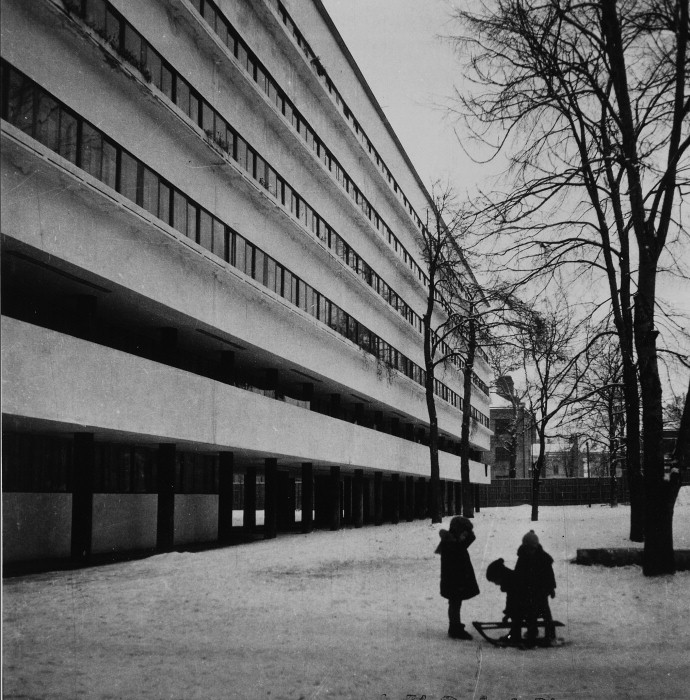

Дом Наркомфина
Материал из Википедии— свободной энциклопедии
памятник архитектуры(местного значения)

Дом Наркомфи́на — один из знаковых памятников архитектуры советского авангарда и конструктивизма. Построен в 1928— 1930 годах по проекту архитекторов Моисея Гинзбурга, Игнатия Милиниса и инженера Сергея Прохорова[2] для работников Народного комиссариата финансов СССР (Наркомфина). Автор замысла дома Наркомфина М. Я. Гинзбург определял его как «опытный дом переходного типа» [3]. Дом находится в Москве по адресу: Новинский бульвар, дом 25, корпус 1. С начала 1990-х годов дом находился в аварийном состоянии, был трижды включён в список «100 главных зданий мира, которым грозит уничтожение»[4]. В 2017—2020 годах отреставрирован[5][6] по проекту АБ «Гинзбург Архитектс», функционирует как элитный жилой дом. Отдельно стоящий «Коммунальный блок» (историческое название) планируется как место проведения публичных мероприятий.
Содержание
- История создания дома Наркомфина
- ОСА и Стройком
- Сотрудничество М. Я. Гинзбурга и Н. А. Милютина
- Идеология «опытного коммунального дома переходного типа»
- Участок
- Состав жилого комплекса
- Архитектура
- Пространственная организация комплекса
- Дом Наркомфина и 5 принципов Ле Корбюзье
- Парк и открытый первый этаж
- Внутренняя структура
- Типы ячеек-квартир и их распределение
- Архитектура коммунального корпуса
- Фасады
- Конструкции и материалы
- Железобетонный каркас
- Блоки Прохорова
- Инженерные коммуникации
- Внешние стены
- Другие экспериментальные материалы
- Цветочницы
- Интерьеры
- Освещение
- Сдвижные окна
- Цвет
- Критика проекта
- С технической стороны
- С бытовой стороны
- История эксплуатации и проект реставрации
- Развитие городского окружения
- Перестройки
- Причины ветхости дома
- Новейшая история дома и реставрация
- Значение проекта в исторической перспективе
- Реальная жизнь в доме Наркомфина
- См. также
- Примечания
- Литература
- Ссылки
История создания дома Наркомфина
ОСА и Стройком
Из всех различных индивидуумов и групп, занимавшихся реформированием повседневной жизни и консолидации социализма в 1920-е годы, архитекторы занимали исключительное положение. Архитектурная инновация Дома Коммуны представляет наиболее полную попытку осуществления реформирования быта и консолидации советского социализма. Самой влиятельной группой архитекторов в этой области являлась ОСА (Объединение современных архитекторов, которую возглавлял М. Я. Гинзбургом). В то время как прочие реформаторы быта пытались внедрить реформистские практики в остатки существующих дореволюционных форм, группа ОСА (образована в 1925 году М. Я. Гинзбургом и братьями Весниными), более известная как конструктивисты, пыталась решить проблему «нового быта» напрямую созданием принципиально новой архитектуры и материальной культуры, основанных на коммунистических отношениях производства и потребления[7].
Дом Наркомфина, или 2-й дом Совнаркома (СНК) РСФСР, стал одним из экспериментальных домов, построенных по результатам теоретических исследований Секции типизации Стройкома РСФСР, созданной по инициативе М. Я. Гинзбурга и работавшей под его руководством в 1928—1929 годы (в работе также участвовали входившие в объединение ОСА: М. О. Барщ, В. Н. Владимиров, А. Л. Пастернак, Г. Р. Сум-Шик). Задачей Стройкома являлось разработка и проектирование новых форм жилья для нового советского общества. Как сказано в монографии Йоганнеса Крамера[de] «Das Narkomfin Kommunehaus In Moskau 1928—2012», «аналогичные устремления существовали в то же время и в Германии, где этими вопросами занимался Исследовательский институт экономической эффективности в строительстве и жилищном хозяйстве (RfG[de]), хотя полученные им результаты были менее радикальными и менее призрачными»[8].
Учреждению секции предшествовала работа в 1928 году комиссии Стройкома по отбору типовых проектов жилья для строительства. Комиссия пришла к выводу, что большинство известных на тот момент проектов не может быть использовано как типовые, поэтому для разработки типовых проектов была создана Секция типизации[9]. Подготовкой для работы над новым форматом жилья также стала работа над домом Госстраха на Малой Бронной (1926—1927, М. Я. Гинзбург и В. Н. Владимиров) и конкурс на «эскизный проект жилого дома трудящихся», проведённый журналом «Современная архитектура» (Гинзбург подал на конкурс проект «Коммунального дома А-1»). Выставка проектов конкурса состоялась в июне 1927 года[10].
Результаты исследования секции М. Я. Гинзбург доложил на пленуме Стройкома РСФСР, где было принято постановление, рекомендовавшее несколько разработанных жилых ячеек к массовому строительству, а остальные — к опытно-показательному, начиная с 1928 года. Согласно этому постановлению было построено шесть «экспериментальных коммунальных домов переходного типа» в Москве, Свердловске и Саратове. Все они служили для проверки результатов теоретических исследований Секции типизации и были созданы в рамках финансировавшейся государством программы экспериментального строительства 1929 года. Как пишет профессор МАрхИ Елена Овсянникова: «Тем не менее, нашёлся реальный заказчик на проведение в жизнь эксперимента Стройкома. Им стал Н. А. Милютин, тогда нарком финансов РСФСР». Проект дома Наркомфина создан в 1928—1929 годы, строительство велось в 1929—1930 годы.
С. О. Хан-Магомедов называет дом Наркомата финансов самым интересным из этих шести экспериментальных домов[2].
Сотрудничество М. Я. Гинзбурга и Н. А. Милютина
Заказчиком жилого комплекса выступал нарком финансов РСФСР (1924—1929) Н. А. Милютин, известный как автор схем социалистического расселения и градостроительных концепций соцгорода[11], он же определил функциональные характеристики будущего здания[12]. Сотрудничество наркома Н. А. Милютина и архитектора М. Я. Гинзбурга началось несколько раньше, на строительстве дома Госстраха (1926—1927), — Милютин был инициатором строительства двух домов Госстраха в Москве. Идеи Н. А. Милютина об устройстве жилища воплотились при создании дома Наркомфина (Дома-парохода, или 2-го дома СНК).
По теории Милютина[13], «значительное повышение жизненного уровня рабочих и развитие обобществлённых форм обслуживания бытовых нужд трудящихся (общественное питание, ясли, детские сады, клубы и т. п.) постепенно уничтожают значение семьи как хозяйственного соединения. Этот процесс неизбежно приведёт, в конечном счёте, к полной переделке семейных форм общежития. <…> Задача раскрепощения женщины от мелкого домашнего хозяйства и вовлечение её в производство заставляет нас ставить вопрос о всемерном содействии этому процессу»[14].
Цель реконструкции быта («новый быт») — ликвидация домашнего хозяйства и семейного уклада жизни, — возможность использовать женщин в качестве рабочей силы на производстве. Эта мысль в «Соцгороде» Милютина выражена вполне отчётливо. Идея «раскрепощения женщины» путём отлучения её от домашнего хозяйства и вовлечения в производственную деятельность («приобщения её к общественно-производственному труду») не была изобретением Милютина. Это была правительственная установка, выраженная в Постановлении ЦК ВКП (б) от 15 апреля 1929 года:
«Усиление влияния промышленных работниц на широкие массы трудящихся женщин, рост активности работниц, поднятие их классового самосознания и культурного уровня требуют дальнейшего увеличения женского труда на производстве. Принятый пятилетний план народного хозяйства обеспечивает огромный рост промышленности на базе реконструкции и социалистической рационализации, которая в отличие от капиталистической рационализации, основанной на эксплуатации рабочей силы, даёт возможность без ущерба для функций материнства расширять применение женского труда в производстве, в том числе и в тяжёлой индустрии. В связи с эти ЦК считает необходимым, чтобы соответствующие советские организации (Госплан, НКТ, ВСНХ и профсоюзы) обеспечили проведение в жизнь предусмотренное в пятилетнем плане вовлечение во все отрасли промышленности женской рабочей силы, приспособив к этому и план её подготовки, обеспечивая неуклонный рост количества женщин во всех звеньях по подготовке квалифицированной рабочей силы, ФЗУ, вечерние курсы, втузы»[15]
Задача реализации этих принципов и была поставлена перед авторами проекта. Согласно Е. Милютиной, это был дом «нового быта»[16].
Сметная стоимость строительства составила 10 млн рублей[17]. Строительство жилого корпуса осуществлялось под наблюдением комиссии, возглавлявшейся Н. А. Милютиным. Коммунальный корпус и корпус прачечной строились без утверждённых чертежей[18].
Идеология «опытного коммунального дома переходного типа»
 Идеи, связанные с планировочной и объёмной структурой, так же, как и с функциональным наполнением дома, изложены в публикациях журнала «Современная архитектура», докладе М. Я. Гинзбурга на пленуме Стройкома[2], а также в его книге «Жилище»[19].
Идеи, связанные с планировочной и объёмной структурой, так же, как и с функциональным наполнением дома, изложены в публикациях журнала «Современная архитектура», докладе М. Я. Гинзбурга на пленуме Стройкома[2], а также в его книге «Жилище»[19].
Секция типизации Стройкома РСФСР ставила перед собой задачи разработки экономичного решения проблемы жилья без потери его качества и даже с повышением комфорта, в частности, благодаря естественному освещению не только жилых, но и подсобных зон, в т. ч. коридоров[20].
Дом Наркомфина переходного типа (от «буржуазного дома» к «социалистической коммуне») хотя и содержал в себе ранее существовавшие «буржуазные» квартиры (ячейки K и 2F), был структурирован таким образом, чтобы облегчить переход индивида к полностью социализированной жизни (в ячейках F)[21].
Гинзбург критически оценивал так называемое моссоветовское строительство («массовое жилищное строительство Москвы первых лет после революции»), считал «экономический эффект» доходного дома более высоким. Поэтому работа Секции началась с анализа типологии «дореволюционного «доходного дома» и её оптимизации. Авторы сохраняли объём и высоту жилых помещений, урезая как площадь, так и высоту подсобных. Были удалены вторые лестницы и комнаты домработниц, уменьшены передние, ванные, спальни и кухни, причём последние — как по площади, так и в высоту. «Уплотнение» подсобных зон компенсировалось большей высотой хорошо освещённых гостиных. Рассчитывались пропорции квартир, оптимальные траектории движения человека внутри и схемы эффективной расстановки мебели. Приведённые в книге расчёты эффективности использования жилого пространства построены на рассмотрении отношения кубатуры к жилой площади квартир и параметра k (k=W/P, соотношение общей кубатуры здания к полезной площади жилых ячеек).
Секция Стройкома разработала несколько типов квартир-ячеек разного размера, названных буквами от A до F, причём в маленьких ячейках F размещалась душевая кабина, в больших ячейках А — ванна. Также был разработан «кухонный элемент» сокращённой площади, закрывающийся складной дверью-ширмой[22]. Кухонные элементы были реализованы в доме на Гоголевском бульваре[23]. Почти все созданные тематические жилые дома так называемого «переходного типа» предусматривали наличие завершённых индивидуальных квартир-ячеек и коммунальных зон для постепенного перехода к новому коллективному образу жизни.
Одной из ключевых позиций М. Я. Гинзбурга было создание изолированных квартир для отдельных семей: «Архитекторы Секции типизации пришли к выводу, что в условиях тех лет решение жилищной проблемы неотделимо от разработки типовых проектов экономичной малометражной (в первую очередь однокомнатной) квартиры для отдельных семей[24]. Гинзбург рассматривал жилую ячейку будущего как предельно ужатую и экономную, но традиционную по структуре квартиру на одну семью. Пусть даже однокомнатную, но с индивидуальными кухней и ванной. В этом Гинзбург и его сотрудники-единомышленники были согласны с европейскими архитекторами, решавшими те же задачи, — Ле Корбюзье, Эрнстом Маем, Бруно Таутом, Ханнесом Майером[25].
В работе Секции Стройкома, как и в выступлениях М. Я. Гинзбурга, отразилась борьба идеи экономичного, но комфортного дома с отдельными квартирами и общественным сервисом — с развивавшейся параллельно в тот же период идеей дома-коммуны (того же Стройкома) с полным обобществлением быта. М. Я. Гинзбург противопоставлял свой «коммунальный дом переходного типа» практике домов-коммун и жёстко критиковал последнюю[26]. По словам М. Я. Гинзбурга, «коммунальный дом» должен «способствовать быстрейшему безболезненному переходу к более высоким формам хозяйства». Именно для этого был запланирован развитый коммунальный блок с функциями общественного питания, стирки, уборки и присмотра за детьми — так же, как и минимальный размер кухонь в квартирах[26]. Между тем М. Я. Гинзбург подчёркивает:
«мы сочли совершенно необходимым создание ряда моментов, стимулирующих переход на более высокую форму социально-бытового уклада, но не декретирующих этот переход»[27].
Таким образом, называть «коммунальный дом» Наркомфина «домом-коммуной» принципиально неверно, так как дом Наркомфина был примером реализации идей противников идеологии дома-коммуны и принудительного обобществления быта.